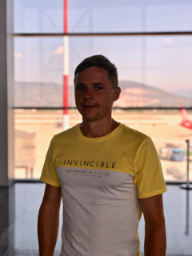

Lovitsky Pavel
 Email: likvipavel@bk.ru
Phone: +375259285411
Country: Belarus
Sity: Minsk
Brief information about yourself
My goal is to learn new things, get an interesting and in-demand specialty, which I will be proud of and pass on my knowledge to other people. Of the strengths, I would like to note great diligence, hard work, perseverance. I put the desire to improve with each new day in the first place. I love being a team member, supporting my comrades and coming to their aid.
- My skills
-
- Version Control System (Git)
- HyperText Markup Language (HTML)
- Cascading Style Sheets (CSS)
- MS Word, MS Excel, and MS Access
- Driving License (Category A, B, C)
- Code examples
- Github
- Work experience
- No experience in IT yet.
- Education
- Belarusian State University of Informatics and Radioelectronics, Faculty of Telecommunications, telecommunications engineer (2011-2016).
- Level of English
- Good reading and translating ability. I study English in online courses, as well as using mobile applications. I plan to study in depth with a personal teacher.
- Interests & Extra information
- Travel, basketball, swimming, bicycle, skating, running.